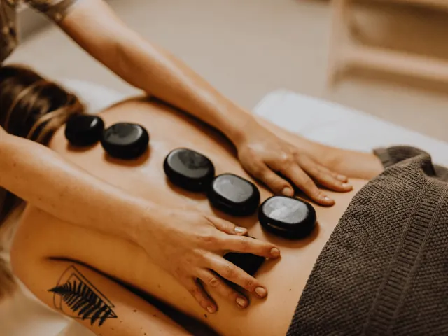

Massagesalon Nijmegen: Zelfzorg en pure ontspanning!
Gepubliceerd op 28 augustus 2023, bijgewerkt op 21 oktober 2026
Onderdeel van de gids Massage in Nijmegen en Nijmeegse Vierdaagse

Spanning in je nek, schouders of rug? Of gewoon toe aan een uur voor jezelf? Een massage helpt je ontspannen en herstellen. In dit artikel lees je wat je kunt verwachten bij een massagesalon in Nijmegen, welke soorten massage er zijn en welke salons we je aanraden.
Wat kun je verwachten bij een massagesalon?
Een goede masseur begint met een kort gesprek over je wensen en eventuele klachten. Zo wordt de massage afgestemd op wat jouw lichaam nodig heeft. Daarna lig je in een rustige ruimte met zachte muziek en de geur van massageolie, en kun je de hectiek van de stad even vergeten.
Een massage is meer dan verwennerij. Het kan spierpijn en spierspanning verlichten, de doorbloeding verbeteren en stress verminderen. Maak je regelmatig tijd voor ontspanning, dan slaap je vaak beter, heb je meer energie en zit je lekkerder in je vel.

Welke massage past bij jou?
Ontspanningsmassage of Zweedse massage
Met vloeiende, rustige bewegingen worden je spieren losgemaakt. Ideaal als je vooral wilt ontspannen.
Hot stone massage
De masseur gebruikt gladde, verwarmde stenen. De warmte dringt diep door in je spieren, waardoor spanning en stress langzaam verdwijnen. Een van de populairste massages in Nijmegen.
Aromatherapiemassage
Een massage met etherische oliën, zoals lavendel, eucalyptus of roos. De combinatie van geur en aanraking werkt kalmerend en kan helpen bij hoofdpijn of vermoeidheid.
Diepe weefselmassage en triggerpointmassage
Voor wie van stevig houdt. De masseur werkt in de diepere spierlagen en pakt vastzittende knopen en pijnpunten gericht aan.
Thaise massage
Een traditionele massage met rek- en drukpunttechnieken. Intensief, maar je voelt je daarna soepel en fit. Nijmegen heeft verschillende Thaise massagesalons.
Zwangerschapsmassage
Speciaal voor aanstaande moeders, met zachte technieken en een aangepaste houding. Zo krijgt je veranderende lichaam de zorg die het nodig heeft.
Massagesalons in Nijmegen: onze tips
Mandarin Spa
Een luxe spa met een breed aanbod aan massages en spabehandelingen, waaronder hot stone en aromatherapie.
Phum Jai Gezondheidsmassage
De masseurs nemen de tijd om naar je wensen en klachten te luisteren, zodat de massage zowel ontspannend als helend werkt.
BanThai Massage
Authentieke Thaise massage met traditionele technieken. Een stevige behandeling die je spieren losmaakt.
Ashton’s massage
Een ervaren massagetherapeut met veel persoonlijke aandacht, voor stress, spanning of specifieke klachten.
Siam Thaise Massage
Een warme en gastvrije salon voor traditionele Thaise massage en verlichting van spierspanning.
Laai Thai Massage
Een rustige omgeving voor Thaise massages en aromatherapie.
Touch of Thai Wellness Spa
Eeuwenoude Thaise massagetechnieken gecombineerd met moderne wellness, in een serene sfeer.
Thai Nara
Authentieke Thaise massage, gericht op het verlichten van spierspanning.
Baipho Thai Massage
Traditionele Thaise massage in een serene omgeving, voor diepe ontspanning en minder spierpijn.
Manibus Massagepraktijk
Een persoonlijke benadering met holistische massages en ontspanningstechnieken, afgestemd op jouw behoeften.
Praktijk Uit Handen
Massagebehandelingen op maat, gericht op ontspanning en minder stress, in een warme sfeer.
House of Billiton Massage en Reiki
Naast ontspannende massages kun je hier terecht voor reiki, een behandeling gericht op je energiebalans.
Het stroomt in jouw Praktijk
Een praktijk voor holistische massage, waar zowel het lichaam als de geest aandacht krijgt.
Nick’s Relaxmassages
Voor een ontspanningsmassage, full body massage, triggerpointmassage of hotstone massage, afgestemd op wat je nodig hebt.
Gewoon ontspannen
Van ontspannende oliemassages tot diepe weefselmassages: hier vind je een behandeling die bij je past.
Jan-Herman Lamers
Een persoonlijke en holistische benadering van massagetherapie, gericht op het verlichten van fysieke klachten.
Tot slot
Gun jezelf af en toe een massage. Kies een salon en een behandeling die bij je past, en merk hoe goed het je doet.